Starting GSoC 2026: the project and how this blog works
The project
This blog tracks my Google Summer of Code 2026 work on gfpop, an R package with a C++ core that detects change-points in a signal under graph constraints. The idea is to describe the allowed shape of a segmentation as a graph of states and edges, and let one dynamic-programming engine fit isotonic, up-down, and other patterns through that single interface. One engine, many shapes.

My project is Time-Dependent Constraints in gfpop. Today that graph is fixed in time: the same edges apply at every data point. That rules out any model whose allowed transitions change along the signal. LOPART is the example I keep coming back to, where what is permitted depends on whether a point falls inside a labeled region. The project adds a rule function that picks which edges are active at each time step, so the constraint graph can vary across the data instead of standing still.
The concrete work is a rule= argument on Edge() and gfpop(), the C++ edge filtering that backs it, and two validation models: LOPART, checked against the standalone LOPART package, and an up-down-with-labels model on synthetic genomic data. Two constraints sit underneath all of it. The argument stays backward compatible, and regression tests prove gfpop without rule returns exactly what it does today, down to the value. A capstone vignette ties it together.
The full write-up and timeline are in the proposal: Time-Dependent Constraints in gfpop.
How this blog is structured
The blog has two jobs.
The first is a contribution log. Each time I change something in gfpop upstream, a post here explains what changed and why, and links the pull request it came from. Those posts close with a short Related PRs section listing the upstream PR as a plain link like [PR #123](https://github.com/vrunge/gfpop/pull/123), so the code and the write-up always point back at each other.
The second is tutorials: posts that show how to use gfpop, with runnable R. The site is built with Quarto, which runs the code in a post at render time. So the output and plots you see are produced by gfpop, not pasted in by hand.
Each post lives in its own folder under posts/. There are no upstream PRs yet, so this first post has no Related PRs section.
Every contribution post after it will.